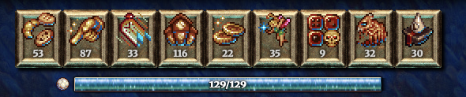
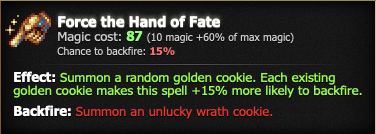
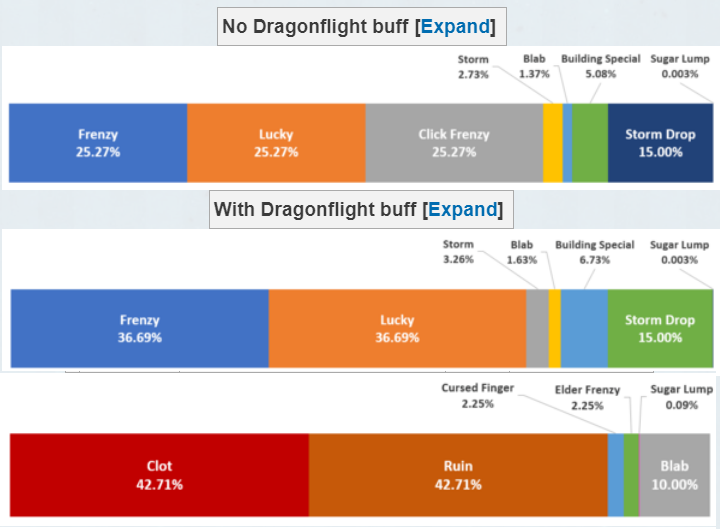
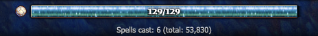
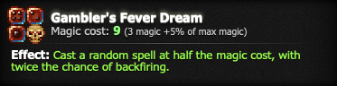

Based on FtHoF planner v1, v2, v3, v4, v5, and v6 by RebelKeithy, Skeezy,
Eminenti, Mylaaan, Joseph, and Leo.
Huge thanks to them for
creating such a helpful (and moddable) tool!
The current version is compatible with cookie clicker 2.058, "housekeeping".
- FtHoF planner V1 by
RebelKeithy (reddit)
- The first version made good use of the code that you can just copy from the cookie clicker website and interpreted the code in a way that made the first FtHoF planner. Basic but a powerful start.
- FtHoF planner v2 by
@skeezy (discord)
- The second version of the FtHoF planner with undeniable the biggest update to it to date. The new version also made it possible to have a look into Gambler's Fever Dream and a combo-finder was added which made it more easy to actually find them.
- FtHoF planner v3 by
@eminenti (discord)
- The third version was mainly a bugfix because of a bugfix. The original and second FtHoF planners made use (just like the original cookie clicker) of a second possible change to alter the outcome of FtHoF (the chime sound). This was a bug and fixed by Orteil. This broke the first 2 planners and was fixed in V3. Later on, the combo-finder was fixed to not to calculate those outcomes for Gambler's Fever Dream.
- FtHoF planner v4 by
@mylaaan (discord)
- The fourth version only added ease of use interface options, such as the "Cast Spell" button to make it easier to keep track of where you are without importing the save again. It also updated some visual features and removed Google Analytics.
- FtHoF planner v5 by
@joseph3079 (discord)
- The fifth version added a "Random Seed" column, which can be used to see how many onscreen cookies will cause a spell to backfire without needing to change settings repeatedly, and can be used to tell what Gambler's Fever Dream will give when it can't choose all 8 spells. Additionally, it now shows building specials, elder frenzies, and sugar lumps that aren't visible due to a wrong backfire chance.
- FtHoF planner v6 and v6.1 by
@1_e0, @cursedsliver, @zypa (discord)
- This version is a radical redesign of the entire user interface,
prioritizing readability, approachability, and modernization.
Additionally, it introduces:
The option to directly import a seed;
Tooltips regarding various things such as spell effects, hidden spell effects, and GFD FtHoF outcomes;
A brand new unified guide;
Loading a customizable amount of new spells;
Ability to define custom highlights;
Finnless destroyer mod integration;
And various new UI options.
On the technical side, the entire codebase underwent a refactor.
- This version is a radical redesign of the entire user interface,
prioritizing readability, approachability, and modernization.
Additionally, it introduces:
- For feature requests or bug reports, ping @cursedsliver on the Dashnet Forums Discord server and ask.
- If you make a bug report, please add the save export. This makes it easier to visualise the problem you're facing and I can make sure it is fixed instead of almost being sure.
Click each panel to open it.
The Grimoire is a minigame in cookie clicker unlocked by getting your wizard towers to at least
level 1 using a sugar lump.
Sugar lumps are unlocked at 1 billion cookies baked.
If you don't have the Grimoire unlocked, you aren't ready to use this tool.

A screenshot of the Grimoire minigame.
In the Grimoire, you cast spells from a selection of 9 different spells to boost your production in various ways. Casting spells cost magic, which regenerates over time.
Each spell also has a small chance to "backfire" when casted, producing a different set of "unintended" effects that are sometimes negative.
This tool is primarily concerned with the second spell in the list, called Force the Hand of Fate (FtHoF for short).

Description for Force the Hand of Fate.
The probabilities of getting each of the various golden cookie effects are different from the probabilities of naturally spawned golden cookies.

The modified effect probabilities of various effects from FtHoF. Notably, Click frenzy (777x click power) is much more common than normal.
The Grimoire has many random elements. Force the Hand of Fate (shorthand: FtHoF) in particular,
as seen above, can give many different effects at different probabilities.
One particular property of the Grimoire is that its random elements cannot be rerolled. This
is called "seeded random". To see what I mean, do the following:
1. Make a backup of your current game using the Export save button in options.
2. Cast Force the Hand of Fate (FtHoF).
3. Click the golden/wrath cookie that spawns, and note down its effect. (also note down
where it spawned)
4. Import the backup you made to go back to before you casted the spell.
5. Go back to step 2 as many times as needed. You will see that you will always get the same
effect from that golden/wrath cookie,
it will either stay golden or stay wrath, and it will always spawn at the same place, no
matter how many times you do it.
This is because randomness in the Grimoire is based on a hidden "game seed" and the amount of
spells you have ever casted in the Grimoire.
The game seed only changes when you ascend, while the spell casted number increments by 1 for
each spell you cast. You can see how many you have casted below the magic bar.

The important number is second one, after "total:"
If neither of those changes, the same spell will always give the same outcome.
Because the randomness only depends on those two things, this tool extracts the hidden game seed
from your save file,
and uses that to produce predictions about what you will get next from FtHoF (you should know
what this means by now) by reverse engineering the game's code.
The table at the bottom of the website contains your future predictions. You can hover over
each effect to see what it means. A wrath cookie indicates backfiring, while a golden cookie indicates success.
Note: these predictions are only 100% valid without any backfire chance modifiers; things such as on-screen unclicked golden/wrath cookies, Diminish Ineptitude (spell), and Supreme intellect (aura) modify backfire chance.
If you do have any backfire chance modifiers, you can use the "Set backfire modifiers" button to input any modifiers that you may have.
Tip: because outcomes only depend on the game seed and the cast count, you can skip
undesirable effects by casting a non-FtHoF, cheaper spell, saving magic regeneration
time.
Some parts of the table will include some abbrevations, and this is also useful for reading more advanced parts of this guide.
(For example, effects with an abbrevation wrapped in brackets after it indicates useful effects that are normally inaccessible, which you can hover over to view more information.)
Below are some useful abbrevations and terms to know for this tool. You don't have to memorize them; you can refer back to this page when needed.
| Term | Proper name | Description |
|---|---|---|
| FtHoF | Force the Hand of Fate | The second spell in the Grimoire, spawns a custom Golden/Wrath cookie. |
| GFD | Gambler's Fever Dream | The seventh spell in the Grimoire, selects a random spell to cast using less magic than normal. |
| GC | Golden cookie | Rare temporary collectibles that give boosts. |
| WC | Wrath cookie | A variant of golden cookies that sometimes give negative effects. |
| Onscreen | Onscreen golden/wrath cookies | An unclicked Golden/wrath cookie. These unclicked cookies increase backfire chance of FtHoF. |
| SI | Supreme Intellect | A dragon aura that makes all spells 10% cheaper but increases base backfire chance by 1.1x |
| RB | Reality Bending | A dragon aura that makes has 10% of the effects of Supreme Intellect (SI). |
| DI | Diminish Ineptitude | A spell that temporarily makes all spells 10 times less likely to backfire on success. Also refers to the effect it generates on success. |
| CF | Click frenzy | An effect from Golden/wrath cookies, giving 777x cookie from clicks for a short period. |
| EF | Elder frenzy | An effect from Wrath cookies, giving 666x CpS for an especially short period. |
| BS | Building special | A category of effects from Golden/wrath cookies, where each building of a randomly chosen building type boosts CpS by 10% per. |
More lingo: click here
The Gambler's Dream column indicates what spell Gambler's Fever Dream (GFD) will choose to cast.

This is useful because spells casted through GFD are cheaper.
If a GFD would cast FtHoF, hovering over the cell would display what that FtHoF will cast. This is usually the outcomes on the row below it.
Despite what the effect description says, GFD actually raises the backfire chance to a minimum of 50% instead of doubling it.
Note: GFD is still a spell, so casting it will cause it to progress to the next outcome.
Also note: This column is valid IF and only if all spells are castable by GFD. A spell is not castable if you don't have enough magic for GFD to cast it, even with the halved magic cost. The minimum amount of magic you need for it to be valid is 22/22 magic.
You can see a more accurate version according to your magic counts by inputting them into the planner through the "Configure magic counts" button just above the table.
The Random seeds column displays a hidden number associated with each row of outcomes that, due to the peculiar way the game is programmed, dictates both backfiring and GFD outcome.
Beside the number you can see how many on-screen golden/wrath cookies it takes for the cast to backfire. (each one adds +15% to backfire chance)
Knowledgeable players also use this information to determine GFD transmutations.
GFD transmutation: GFD can be coerced into casting something that it would not normally cast,
by adjusting magic count and max magic count such that a specific subset of spells are castable by GFD.
The Combo finder can be accessed through the "Open Combo finder" button.
A combo is a cluster of close-by Building Specials (BSs). Click frenzies (CFs) are ignored because they are extremely common and one can be assumed to exist near any combo that you find.
The combo finder finds those in the seed/save inputted. Note: the combo finder is mainly useful with advanced strategies such as quadcasting and with at least 600 wizard towers.
Combo finder settings
Min combo: the minimum amount of BSs to find.
Max combo: the maximum amount of BSs to find.
Max spread: dictates how close together the rows with BS must be. Each point of spread is one spell in the sequence that can be non-BS and cannot be skipped for free.
For example, if you want a 3x combo and are ok with a sequence of [BS, non-BS, BS, BS], that would be a combo size of 3 with a spread of 1, for a total length of 4.
Include Elder frenzies: Elder Frenzies (666x cps for a very short time) also counts as a BS.
Skip abomination: Rows without a useful effect like BS but with Gambler's Fever Dream (GFD) casting Resurrect Abomination does not contribute to its spread (spread from Max spread setting).
This is because on such a row, if you cast GFD while the grandmapocalypse is NOT ongoing, you will go to the next row for free.
Skip spontaneous edifices: Rows without a useful effect like BS but with Gambler's Fever Dream (GFD) casting Spontaneous Edifice successfully does not contribute to its spread (spread from Max spread setting).
Same story as Skip abomination, because on such a row, if you cast GFD while you have at least 400 of every building, you will go to the next row for free.
Routing resources
Routing is the act of taking a potential combo and figuring out a way to turn this potential combo into a real combo with a series of executable steps. This is only applicable for very late game (800+ towers) and you need to perform combos with 2+ effects from the Grimoire to progress.
Grimoire calculator: a tool to figure out spell costs and tower counts quickly. Requires some advanced knowledge of the Grimoire to use.
Finnless Grimoire guide: a late-game guide containing information on how to find and route a combo, including information on how to use the Grimoire calculator above.
You can also go to the Official Cookie clicker Discord server to ask for help routing a combo.
Finnless destroyer
Finnless destroyer is a mod developed by @xyntercept on discord, integrated into this planner.
It is a very advanced tool for top finnless players to be able to find extremely large combos (10+ effects) quickly.
Highlight settings can be accessed through the "Show/hide Highlight settings" button.
In the planner, some noteworthy outcomes (such as BS and EF) are highlighted to make them easier to spot.
You can modify what outcomes are considered noteworthy, change their colors, or add new highlights.
Advanced mode can be toggled through the top-right button.
Advanced mode allows you to add filtering logic to your highlights.
For example, it can detect consecutive BSes, by making a BS outcome only highlight blue if there is a BS in the row above it.
Information about the syntax can be through the "Advanced help" button.
RebelKeithy
- There are two main things that can affect the result of FtHoF, the current season
and the golden cookie sound selector.If the season is Valentines or Easter the random seed will be increased onceSome seasons will alter the outcomes of FtHoF. This means there are 2 possible results for each cast of FtHoF depending on the selected season. Continuing to switch between seasons will not affecting the results, they only affect the result at the time the spell is cast. - Dragonflight can also affect the results of casting FtHoF. If the buff is active (not just possible) when FtHoF is cast then Click Frenzy is not added to the pool of possible results. This can change the result even if the original result was not a Click Frenzy.
- Another thing that after the result is how many golden cookies are already on the screen. Each one increases the chance of failure by 15%.
- Since the result of FtHoF is based on the number of spells cast, if the next FtHoF cookie is not the one you want, you can cast a different spell to skip this one. This can be useful if you are searching for a particular cookie or need to skip a wrath cookie.
Skeezy
- Min combo is the smallest combo to search for; Max is the largest.
- Spread is how much leeway to include in the combo search. For example, if you want a 3x combo and are ok with a sequence of [BS, non-BS, BS, BS], that would be a combo size of 3 with a spread of 1, for a total length of 4.
- Include Elder Frenzies is asking whether to count EF spawns from FtHoF in your combos. For most people these are just as good, if not better than Building Specials, so they're included by default. But in some cases you may not want EF via FtHoF, so I have an option to exclude it.
- For Skip Abominations and Skip Spontaneous Edifices, see below for more explanation, but these options are just asking whether to factor in skippable rows when searching for combos. Can't imagine why you'd want this off, but I have the option there at least for educational purposes.
- More chances for Building Special or Elder Frenzy via Gambler's -> FtHoF. Plus these casts end up costing significantly less mana, which can help with more spread-out combos. Hover over the cookie when it's FtHoF to see what the cookie might contain
- Allows for more combos by skipping over certain rows when desired. (Abominations and successful Spontaneous Edifice casts from Gambler's can both increment your spell counter for free, i.e. without costing any mana.)
- For the same skipping reason as above, this can help in incrementing your spell counter quickly to get to your desired combo.
Mylaaan
- The Cast Spell button will forward the whole list 1 spell. It will also apply all settings, so if you have changed them, the outcome for future spells may change. If you have to cast FtHoF for a CF first you want to keep that cookie on screen, so you can increase the amount of golden cookies on screen at the same time.
- If you made progress you don't want to click the Import Save button as it will reset your manually cast spells. You can use Apply Settings to change stuff up without losing track.
Joseph3079
- The Random Seed column shows how much of a backfire chance is required to make a spell backfire. If the random seed is between 0.85 and 1, the spell will backfire with no golden cookies on screen. If the random seed is between 0.7 and 0.85, it will backfire with 1 golden cookies on screen, but it will succeed with 0 golden cookies on screen.
- The same random number is used to determine what spell Gambler's Fever Dream chooses. If you have enough magic for any of the 8 spells to be chosen after paying GFD's cost, a random seed that is between 0 and 1/8 will choose the first spell (Conjure Baked Goods), a random seed that is between 1/8 and 2/8 will choose the second spell (FtHoF), and so on. If you don't have enough magic for GFD and half of the price of Spontaneous Edifice, there will only be 7 eligible spells, so a random seed between 0 and 1/7 will give Conjure Baked Goods, a random seed between 1/7 and 2/7 will give FtHoF, and so on. This might interfere with a GFD that says it will give FtHoF, but at a low enough magic amount it might give CBG instead.
-
{{$index + min_combo_length}}x Combo
- No combo of this length
- Earliest: Length {{combo.first.length}}; spread {{combo.first.length - ($index + min_combo_length)}}; starting at spell #{{combo.first.idx+1}}
- No combo of this length with spread below {{max_spread+1}}
- Shortest: Length {{combo.shortest.length}}; spread {{combo.shortest.length - ($index + min_combo_length)}}; starting at spell #{{combo.shortest.idx+1}}
Finnless Destroyer is a specialized combo finder for the Finnless ruleset (decacasts and beyond). It scans a long lookahead for sequences of Gambler's → Force the Hand of Fate casts that line up with nearby Building Specials. The scan reuses the same RNG as the main prediction table, so the seed above is what gets analyzed.
Options:
Output:
Within Advanced mode, you will be able to directly input boolean expressions to specify what exactly should be highlighted. The boolean expression is run against each outcome (for both no change and one change), and then the Gambler's Dream outcome. The expression consists of a bunch of Statements stringed together by Operators and brackets. Details below.
Operators
Name
Symbols
Format
Function
Example
Explanation
NOT
!
![subexpression]
Inverts or negates the results of the subexpression.
!Click frenzy
Any effect OR GFD outcome that is NOT click frenzy.
AND
&
[subexp] & [subexp]
Returns true if both subexpressions are true. The subexpressions CANNOT
be BOTH Outcome statements.
Frenzy & isRA:-1
Matches for Frenzy with the condition named "isRA" true on the previous
row.
OR
|
[subexp] | [subexp]
Returns true if either subexpression is true.
Frenzy | Click Frenzy | Elder Frenzy
Matches any "Frenzy" effect.
BRACKETS
()
([subexpression])
The inside subexpression is evaluated independently.
BS & (isBS:-1 | isBS:-2)
Matches for a Building Special with the condition named "isBS" true on
either the previous or the second previous row.
Statements
Category
Subcategory
Examples
Description
Outcome statements
Effect
Frenzy, Lucky, Cursed Finger, EF, BS, ...
An outcome from casting Force the Hand of Fate. Impossible outcomes
such as Dragonflight are not valid. Supports community recognized
abbreviations.
GFD
Conjure Baked Goods, Diminish Ineptitude, FtHoF, ...
A possible spell that Gambler's Fever Dream can select and cast.
Supports community recognized abbreviations.
Range
{0-0.1}, {0.25-1}, {1/7-3/7}, ...
A range enclosed in curly braces, indicates that the Random Seed
entry in the row must be within this range. This is evaluated on the
Gambler's Dream column, since the outcome is associated with the
Random Seed. Supports integer fractions.
Specials
Effect, GFDOutcome, Backfire:0.15, Backfire:0.5
Effect, GFDOutcome: Only matches effects and Gambler's Fever Dream outcomes
respectively.
Backfire: matches if the row that the cast is contained in
backfires with backfire chance equal to or higher than the inputted number after the colon;
thus applies to all casts in a row at once.
Condition statements
isBS:1, isEF:-1, your own highlighting conditions here
Matches if the corresponding condition is true on the row offset
indicated by the number after the colon. For example, isBS:1 asks to
evaluate isBS on all entries in the row after the current one, and
returns true if any of them are true.
| Name | Symbols | Format | Function | Example | Explanation |
|---|---|---|---|---|---|
| NOT | ! | ![subexpression] | Inverts or negates the results of the subexpression. | !Click frenzy | Any effect OR GFD outcome that is NOT click frenzy. |
| AND | & | [subexp] & [subexp] | Returns true if both subexpressions are true. The subexpressions CANNOT be BOTH Outcome statements. | Frenzy & isRA:-1 | Matches for Frenzy with the condition named "isRA" true on the previous row. |
| OR | | | [subexp] | [subexp] | Returns true if either subexpression is true. | Frenzy | Click Frenzy | Elder Frenzy | Matches any "Frenzy" effect. |
| BRACKETS | () | ([subexpression]) | The inside subexpression is evaluated independently. | BS & (isBS:-1 | isBS:-2) | Matches for a Building Special with the condition named "isBS" true on either the previous or the second previous row. |
| Category | Subcategory | Examples | Description |
|---|---|---|---|
| Outcome statements | Effect | Frenzy, Lucky, Cursed Finger, EF, BS, ... | An outcome from casting Force the Hand of Fate. Impossible outcomes such as Dragonflight are not valid. Supports community recognized abbreviations. |
| GFD | Conjure Baked Goods, Diminish Ineptitude, FtHoF, ... | A possible spell that Gambler's Fever Dream can select and cast. Supports community recognized abbreviations. | |
| Range | {0-0.1}, {0.25-1}, {1/7-3/7}, ... | A range enclosed in curly braces, indicates that the Random Seed entry in the row must be within this range. This is evaluated on the Gambler's Dream column, since the outcome is associated with the Random Seed. Supports integer fractions. | |
| Specials | Effect, GFDOutcome, Backfire:0.15, Backfire:0.5 | Effect, GFDOutcome: Only matches effects and Gambler's Fever Dream outcomes respectively. Backfire: matches if the row that the cast is contained in backfires with backfire chance equal to or higher than the inputted number after the colon; thus applies to all casts in a row at once. | |
| Condition statements | isBS:1, isEF:-1, your own highlighting conditions here | Matches if the corresponding condition is true on the row offset indicated by the number after the colon. For example, isBS:1 asks to evaluate isBS on all entries in the row after the current one, and returns true if any of them are true. | |